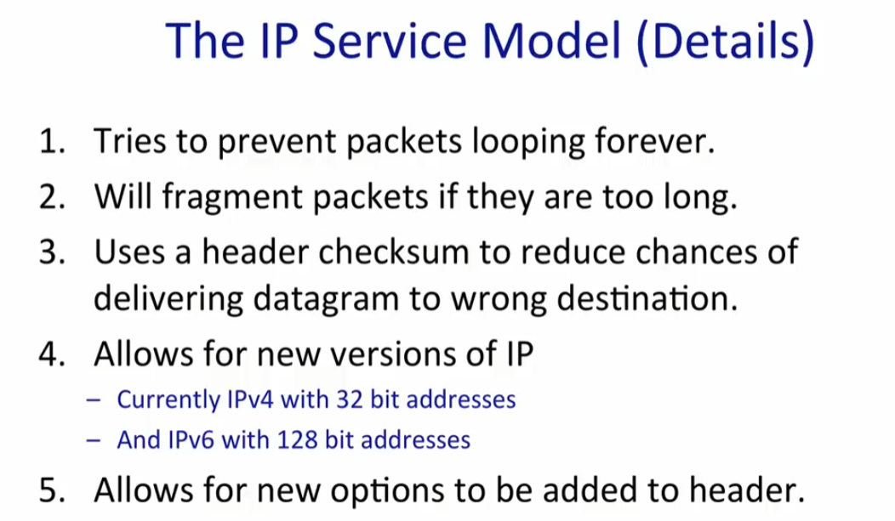
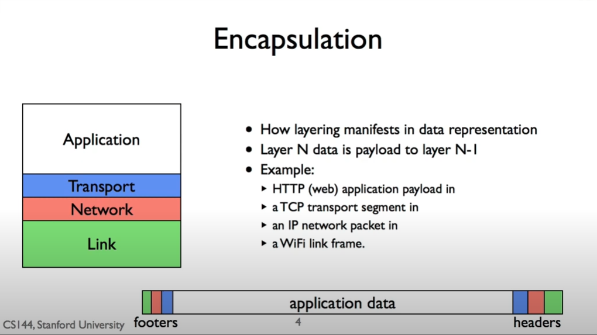

Unit1: The Internet and IP
1 The 4 Layer Internet Model

- 应用层：双向可靠字节流。使用应用特定的传输协议：比如万维网的 HTTP（Hypertext Transfer Protocol）。
- 传输层：确保正确、顺序等等的 TCP（Transmission Control Protocol）、没有确保的 UDP（User Datagram Protocol）。
- 网络层：传递数据报（datagram），使用 IP（唯一选择）。
- 数据链路层。

2 IP 服务
IP 服务模型的特点：
- 数据报。当请求 IP 传送数据，它会创建一个数据报并将信息放入。数据报是一个独立路由的包（packet），其 header 记录了它的源（IPSA）和目标地（IPDA）。数据报 hop-by-hop1 地在路由器之间传输，知道目的 IP 地址。每个路由器都有个 forwarding table 来标记下一处目的地。
- 不可靠。IP 不对数据传输做任何保证。
- Best effort。IP 只会在必要时才丢弃数据报。
- 无连接（connectionless）。IP 不会为每个数据流2维护独立状态信息（no per-flow state）。
1 hop 指数据包经过路由器或节点转移到其他网络的过程。
2 数据流是一堆数据报的集合，它们同属于一个端到端的连接，比如 TCP connection。
端到端原则：尽可能在终端主机实现特性。

3 TCP 字节流
客户端如何通过网络与服务端建立联系？三次握手（3-way handshake）：
- 客户端发送同步信息（SYN）；
- 服务端发送同步和确认消息（SYN/ACK）；
- 客户端发送确认消息（ACK）。
传输层负责发送数据的应用。从网络层来看，向相同电脑上的不同应用发送包是无法区分的。因此向其他应用建立 TCP 流，我们需要两个地址：IP 地址和 TCP 端口。
4 包交换（Packet Switching）
包交换：将一个数据报分为独立的包，对每个送达的包，选择送出的连接。如果连接没有被占用，就发送。否则保持。
包交换不必要跟踪每个包，所有包都是 self-contained 的（参考 IP 服务的无连接特性）。
5 封装
一层层嵌套的结构，底层的结构不需要知道自己的 payload 到底是什么。

封装的思想可以让我们实现更复杂的应用场景：VPN。

TLS（Transport Layer Security） 协议加密了通信数据。
6 Byte Order
传输数据也有 little endian 和 big endian 的问题，有专门的库会进行大小端的转换，这里略过。
7 IPv4
IPv4 是一个 32bit 的地址，通常写为四个 8bit 数排列，用点分隔，比如 a.b.c.d。
子网掩码（netmask）用来标识 IP 地址哪些位置是主机所在网络地址，也表示成 IP 地址的形式。比如 255.128.0.0 表示一个 9bit 掩码。两个 IP 地址如果与其掩码相与后相等，则这两个 IP 地址在同一个网络下。
IP 地址由 CIDR（Classless Inter-Domain Routing）管理。CIDR 表示法：如 198.51.100.0/22 表示从 198.51.100.0 到 198.51.103.255 的 \(2^{32-22}=1024\) 个 IP 地址。斜线后面的数字表示掩码的位数，掩码后的位置可以自由分配。
在每个路由器的 forwarding table 中，一个 IP 地址可能会与多个地址匹配。比如 171.33.0.1 可以和 0.0.0.0/03 与 171.33.0.0/16 匹配，此时我们选取具有最长公共前缀的匹配。
3 称为 default route，可以与所有 IP 地址匹配。
8 地址解析协议（ARP，Address Resolution Protocol）
ARP 是一个通过解析网络层地址来找寻数据链路层地址的网络传输协议。数据最终由网卡硬件传输，每个网卡都有独立的 MAC（Media Access Control Address） 地址（如 00:13:72:4c:d9:6a）。由于历史原因，网络层和链路层的地址是耦合在一起的。在发送一个包时，不仅需要 IP 地址，还需要对应的链路层地址。ARP 维护一个 IP 与链路层地址对应的缓存，当要发送一个包时，如果缓存上没有对应的数据，ARP 会发送一个广播请求，接收请求的对应主机会回复自己的 MAC 地址，当得到回应时 ARP 更新对应的缓存并发送数据。缓存会在保留一段时间后自动丢弃。